Streaming Integrator Tooling Overview¶
The Streaming Integrator Tooling is a developer tool that is shipped with the Streaming Integrator to develop Siddhi applications. It allows provides two interfaces to develop Siddhi applications
- Source View : This allows you to write Siddhi applications in the Siddhi Query Language. This supports auto-completion, tracking syntax errors and debugging.
- Design View :This interface visualizes the event flow of a Siddhi application, and allows you to compose the applications by dragging and dropping Siddhi components to a graph.
Once a Siddhi application is created, you can simulate events via the Streaming Integrator Tooling to test whether it works as expected. You can also run the Siddhi application in the debug mode to detect errors in the Siddhi logic.
Starting Streaming Integrator Tooling¶
To start and access the Streaming Integrator Tooling, follow the steps below:
- Start the Streaming Integrator Tooling by issuing one of the following
commands from the
<SI_HOME>/bindirectory.- For Windows:
streaming-integrator-tooling.bat - For Linux:
./streaming-integrator-tooling.sh
- For Windows:
-
Access the Streaming Integrator Tooling via the
http://localhost:/editorURL. The Streaming Integrator Tooling opens as shown below.Info
The default URL is
http://localhost:9390/editor.
Welcome Page¶
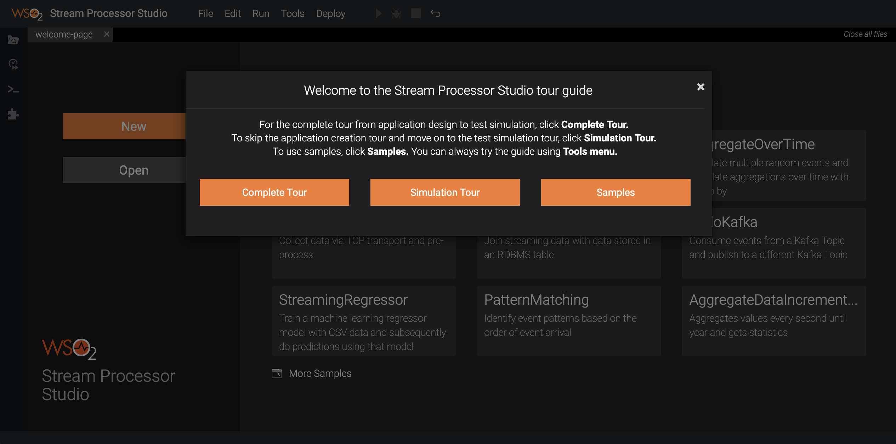
The Welcome to the Streaming Integrator Tooling Tour Guide is open by default. You can take a tour by following the instructions on the dialog box, or close it and proceed to explore the Streaming Integrator Tooling on your own. You can also access this dialog box by clicking Tools => Tour Guide . Once you close the dialog box, you can try the following:
-
New
Click this to open a new untitled Siddhi file. -
Open
Click this to open a Siddhi file that is already saved in theworkspacedirectory of the Streaming Integrator Tooling. If the file is already opened in a new tab, clicking Open does not open it again. The default path to theworkspacedirectory is<SI_Home>/wso2/server/deployment. -
Try out samples
The pre-created samples provided out of the box are listed in this section. When you click on a sample, it opens in a new tab without a title. -
More Samples
Click this to view the complete list of samples in the samples directory. This allows you to access samples other than the ones that are displayed by default is the Try out samples section. When you click on a sample, it opens in a new tab without a title. -
Quick links
This section provides links to more resources.
Menu items¶
This section explains the options that are available in the File , Edit and Run menus.
File menu Items¶
The File menu includes the following options.
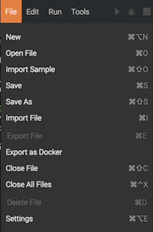
- New
Click this to open a new untitled Siddhi file. -
Open File Click this to open a Siddhi file that is already saved in the
workspacedirectory of the Streaming Integrator Tooling. If the file is already opened in a new tab, clicking Open does not open it again. The default path to theworkspacedirectory is<SI_Home>/wso2/server/deployment. ` .When a Siddhi file is opened, its source view is displayed by default.
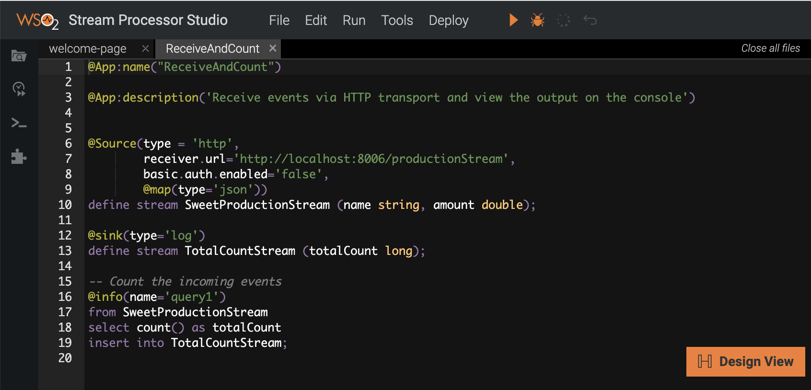
To view a design view where the elements of the Siddhi application are graphically represented, click Design View. As a result, a graphical view of the Siddhi application is displayed as shown in the following example.
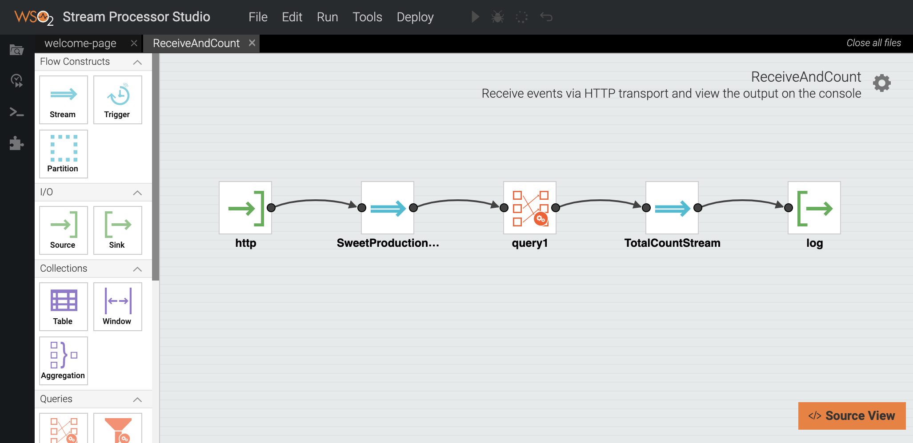 -
Import Sample
Click this to import a sample from the samples diretory to a new tab. The sample opens in an untitled Siddhi file. Once you save it, it can be accessed from theworkspacedirectory. -
Extensions Installation Click this to install extensions, or un-install extensions that have been already installed. Once you click on this menu item, the Extension Details dialog box appears. You can install or un-install the shown extensions by clicking the relevant button, which is shown based on the extension's installation status.
For detailed information, see Installing Siddhi Extensions.
-
Save
Click this to save an edited or new file to theworkspacedirectory. -
Save As
Click this if you want to save an existing saved file with a different name. If you click this for an untitled Siddhi file, the normal save operation is executed (i.e., same operation carried out when you click Save ). -
Import File
Click this to open a file from a system location. This file is opened in a new tab in the saved state with the same file name with which it is imported. -
Export File Click this to export a saved file to a system location. This is only applicable to Siddhi application tabs that are in a saved state.
-
Export as Docker
Tip
The exported Docker artifacts use docker-compose for this purpose. Therefore to run the artifacts, you need to install the following in the running environment.
+ Docker + Docker ComposeClick this to export one or more selected Siddhi applications in a Docker container. Once you click on this menu item, the Export as Docker dialog box appears.
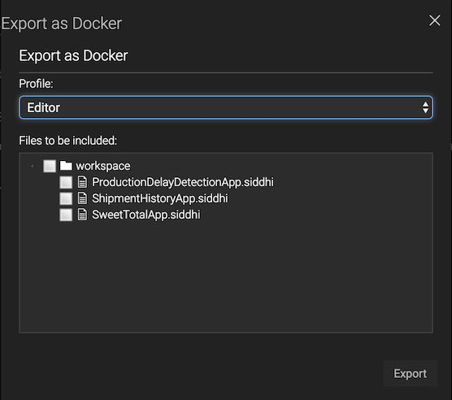 Select the relevant check boxes to indicate which Siddhi files you need to export. If you select the check box for workspace , all the Siddhi applications in theworkspacedirectory are exported.For detailed information, see Exporting Siddhi Applications.
-
Close File Click this to close a currently active Siddhi application that is already open in a tab.
-
Close All Files Click this to close all the Siddhi files that are currently open.
-
Delete File
Click this to delete the currently active Siddhi file from theworkspacedirectory. Only Siddhi files that are already saved can be deleted. -
Settings
Click this to change the theme and the font size used in the Streaming Integrator Tooling. The default theme is Twilight .
Edit menu Items¶
The Edit menu includes the following options.
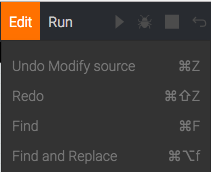
-
Undo
Click this to undo the last edit made to the Siddhi application that you are currently editing. Only unsaved edits can be undone. -
Redo
Click this to redo the edit that was last undone in the Siddhi application that you are currently editing. The redo operation can be carried out only if you have not saved the Siddhi application after you undid the change. -
Find Click this to search for a specific string in the currently active Siddhi application tab.
-
Find and Replace
Click this to search for a specific string in the currently active Siddhi application tab, and replace it with another string. -
Reformat Code
Click this to reformat the Siddhi queries in the Siddhi application you are currently creating/editing in the source view.Info
This menu option is only visible when you are working in the source view.
-
Auto-Align
Click this to horizontally align all the Siddhi components in a Siddhi application that you are creating/editing in the design view.Info
This menu option is only visible when you are working in the design view.
Run menu Items¶
The Run menu includes the following options.
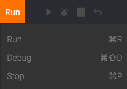
-
Run
Click this to start the Siddhi application in the Run mode. Only saved Siddhi applications can be run.Info
This menu option is enabled only when a Siddhi application is being created/edited in the source view.
-
Debug
Click this to start the Siddhi application in the Debug mode. Only saved Siddhi applications can be run in this mode.Info
This menu option is enabled only when a Siddhi application is being created/edited in the source view.
-
Stop
Click this to stop a Siddhi application that is already started in either the Run or Debug mode.
Tools menu items¶
The Tools menu provides access to the following tools that are shipped with the Streaming Integrator Tooling.
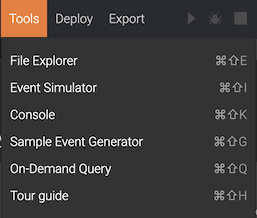
-
File Explorer The file explorer. This is also avaible in the Side Panel.
-
Event Simulator
Simulation can be carried out in two ways:
- Single Simulation
- Feed Simulation
For detailed information about event simulation, see Simulating Events.
The event simulator can also be accessed from the Side Panel. -
Console This is an output console that provides feedback on various user activities carried out on the Streaming Integration Tooling. It is accesible from the Side Panel.
-
Sample Event Generator This opens the Sample Event Generator as follows.
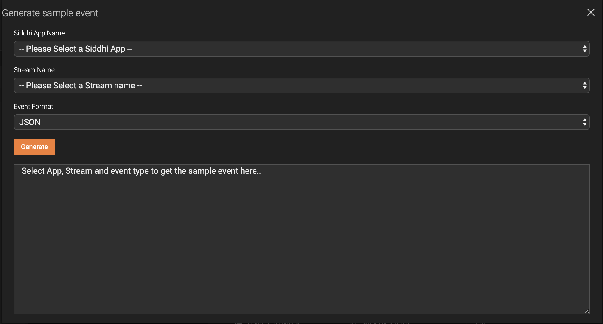
Here, you can generate sample events for a selected stream within a selected Siddhi application in a specified format. -
On-Demand Query This opens the On-Demand Query dialog box. 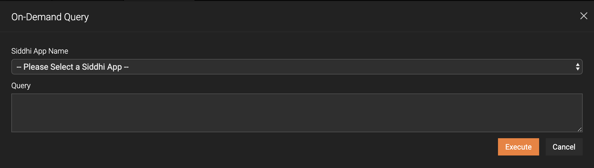 Here, you can select a Siddhi application, and then enter a query to manipulate the store in which that Siddhi Application saves data. You can enter queries that can update record, insert/update records, retrieve records and delete records. For more information about actions you can carry out for stores, see Storage Integration - Performing CRUD operations via REST API.
-
Tour Guide This opens a dialog box named Welcome to the Streaming Integrator Tooling Tour Guide which guides you to understand Streaming Integrator Tooling. When you start the Streaming Integrator Tooling and access it, this dialog box is open by default.
Deploy menu items¶
The Deploy menu has the following option to select one or more Siddhi applications and deploy them to one or more Streaming Integrator servers. For more information, see Deploying Siddhi Applications.
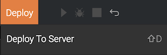
Export menu items¶
The Export menu has the following options that allow you to export Siddhi applications in a format that can be deployed in a containerized environment.
-
For Docker This opens the Export Siddhi Apps for Docker image wizard. For more information, see Exporting Siddhi Applications - Exporting Siddhi applications as a Docker Image.
-
For Kubernetes This opens the Export Siddhi Apps For Kubernetes CRD wizard. For more information, see Exporting Siddhi Applications - Exporting Siddhi Applications for Kubernetes.
Side Panel¶
File Explorer

This provides a view of all the files saved as shown in the example above.
Event Simulator¶
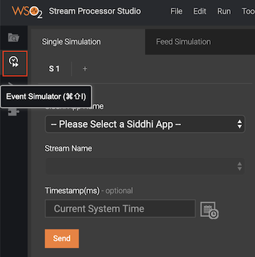
Simulation can be carried out in two ways:
- Single Simulation
- Feed Simulation
For detailed information about event simulation, see Simulating Events.
Output Console¶
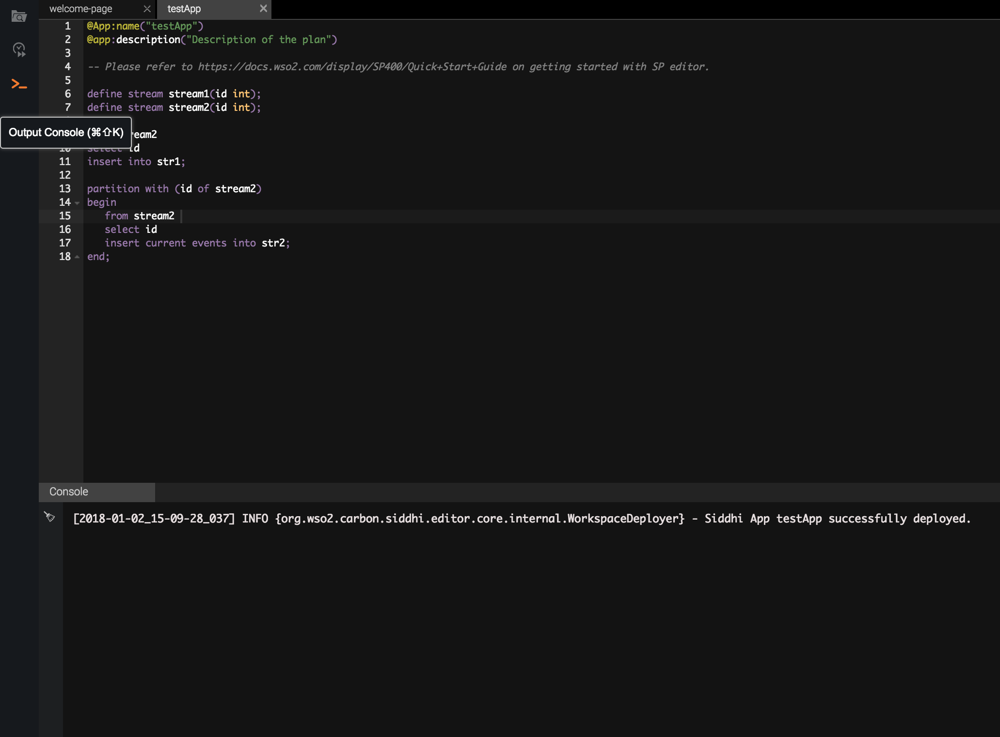
This provides feedback on various user activities carried out on the Streaming Integrator.
Operator Finder¶
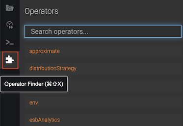
Click the Operator Finder icon to search for the Siddhi extensions that you want to use in your Siddhi applications.
- For the complete list of Siddhi extensions that you can search for via the Operator Finder, see Siddhi Extensions.
- For detailed instructions to find and use a Siddhi extension via the Operator Finder demonstrated with an example, see Creating a Siddhi Application.
Toolbar¶
- Run icon
Click this to start a currently open Siddhi application in the Run mode. This icon is enabled only for saved Siddhi applications. - Debug icon
Click this to start a currently open Siddhi application in the Debug mode. This icon is enabled only for saved Siddhi applications. - Stop icon
Click this to stop a Siddhi application that is currently running in either the Run or Debug mode. - Revert icon
Click this to revert the unsaved changes in the Siddhi application that is currently being created/edited.